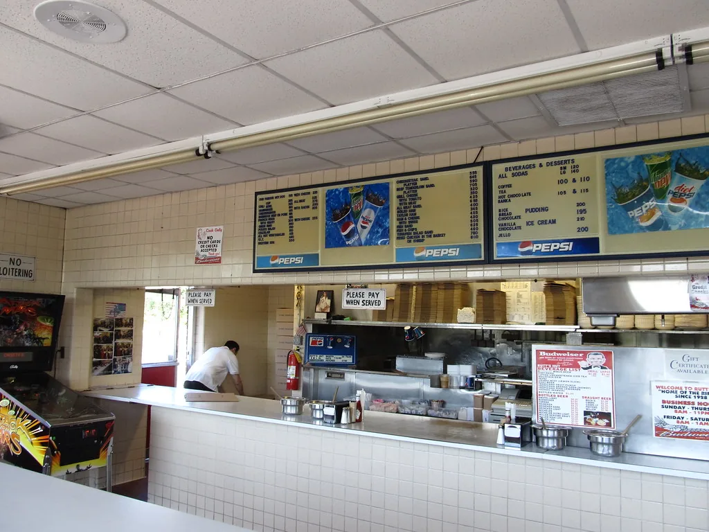
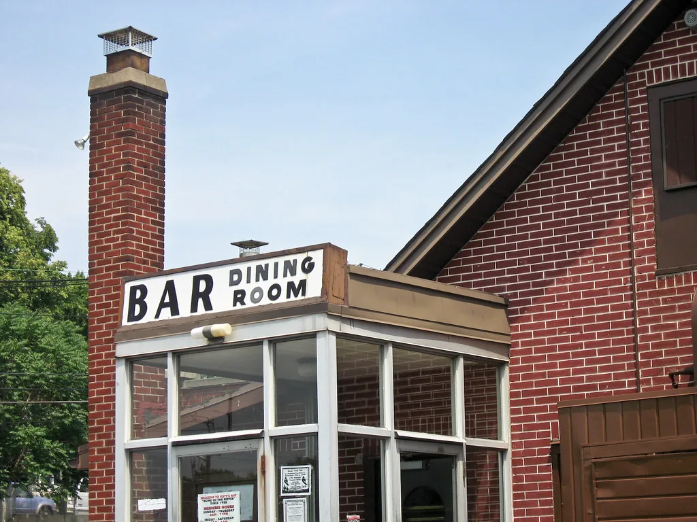
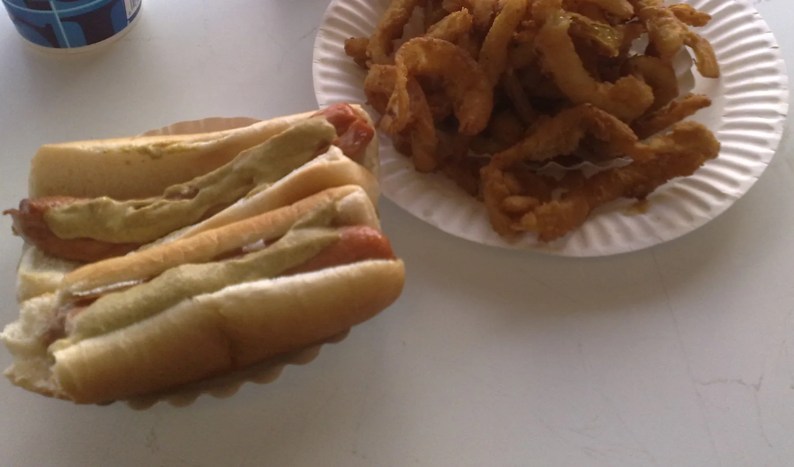
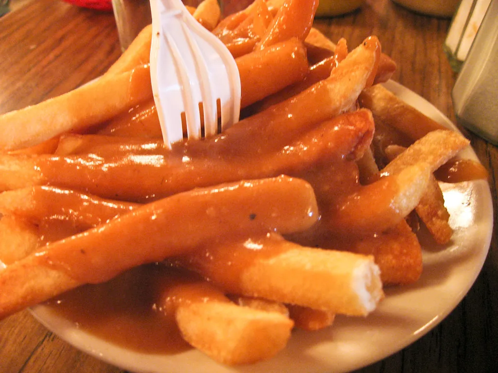
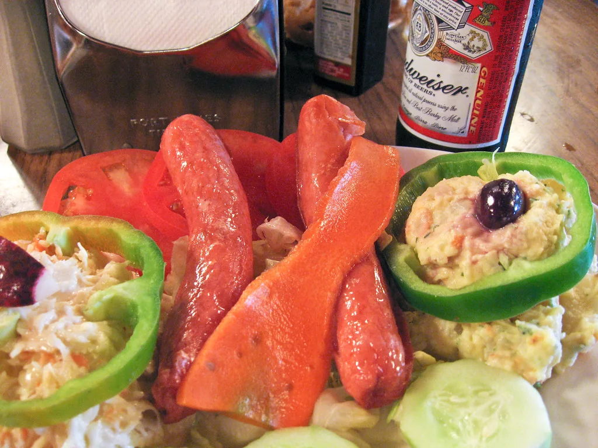
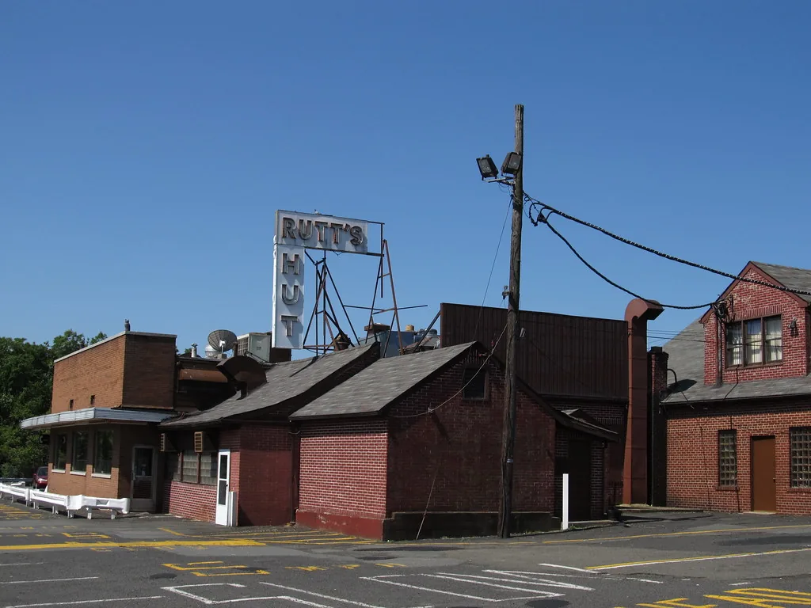

Rutt's Hut: Rippers
Dropped in hot oil till the skin rips.
The casing cracks and splits in the fryer. That's the name: a Ripper.

The take-out counter.
One side of the building. Order at the counter, pay, eat.

The other door.
Bar and dining room, same building, if you'd rather sit down.
So. How long should it stay in?
In-and-Outer
In the oil, out of the oil. It sinks, floats back up, and comes out. Closest to a regular hot dog.
Ripper
The house dog. Fried until the casing cracks open.
Weller
Well-done. Longer in, darker and crisper all the way around.
Cremator
Charred black. Fried until it shrivels. People ask for it on purpose.
Then the relish.
Mustard, cabbage, pickle relish and a blend of spices the house keeps to itself.


Fries with gravy.

The platter.
Two dogs, potato salad, cole slaw.History

- 1928
- Royal "Abe" Rutt and his wife Anna open a roadside stand.
- 1974
- The Rutts sell it. The Rippers stay.
- Since
- PBS's A Hot Dog Program, and a page in 1,000 Places to See in the USA and Canada Before You Die.
Your order
One Ripper.
Say it at the take-out counter, or order ahead.
- Where
- 417 River Road
Clifton, NJ 07014 - Call
- (973) 779-8615
- Hours
- Daily from 8am
Till 10pm, Fri & Sat till 11pm